Add a Text Box to a Java Form
Java Calculator Project: 1 2 3 4 5 6 7 8 9 10
What our form needs now is a text box and some buttons. Let's add the text box first.
Locate the Text Field control in the Palette:
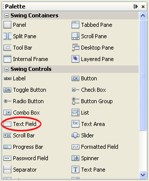
Controls in the NetBeans Palette can be dragged onto a form. So click on Text Field to select it. Now hold you left mouse button down on the Text Field. Keep it held down and drag the control onto the form:
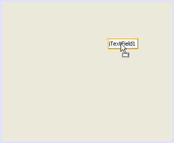
Let go anywhere on the form:
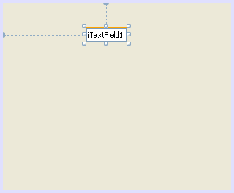
The squares around the text field are sizing handles. You can hold down your left mouse button on one of the squares and drag to a new width or height. The dotted lines are position indicators, one for the left position and one for the top position. Notice that the default name for the text field is jTextField1. Let's change that.
With the text field selected, have a look at the Inspector area in the bottom left: (If you can't see an Inspector area, click Window > Navigating > Inspector from the NetBeans menu bar.)
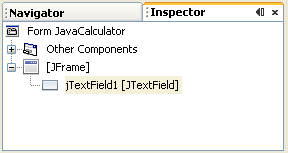
As you can see, jTextField1 is selected in the Inspector. This area shows you what objects you have on your forms. You can also rename an object from here. To do so, right click on jTextField1. From the menu that appears, select Change Variable Name.
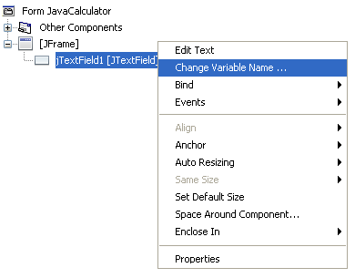
When you click on Change Variable Name, a dialogue box appears. Type a new name for the Text Field. Call it txtDisplay:
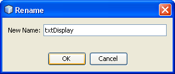
Click OK. When you do, NetBeans will rename your text field:
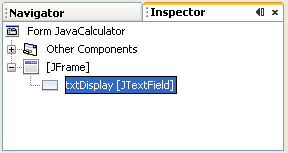
Now have a look at your code again by clicking the Source button in the main window. When your code appears, scroll down to the bottom. You'll see that a new private field variable has been added:
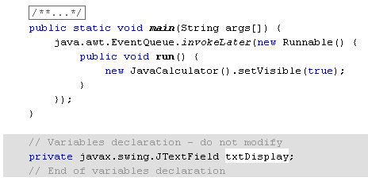
So a JTextField variable has been set up with the name txtDisplay. The "javax.swing" part is a reference to a set of packages that are used for GUI development. Swing makes it easier for you to create forms and the controls on forms.
Click on the Design button at the top to return to your form. The text field has some default text in, at the moment. You can add your own text by changing the text property of the text field.
Make sure your text field is selected on the form. Now locate text in the properties window:
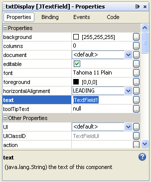
Delete the default text of jTextField1 and leave it blank:
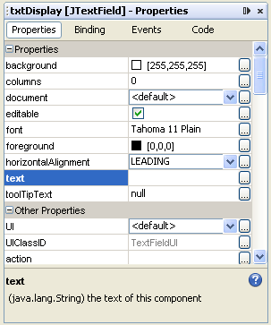
Then press the enter key on your keyboard. Have a look at your text field object on the form. It may well have changed size. Use the sizing handles to resize it. You'll see that it now has no text in it at all:
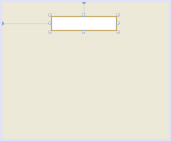
The text field on our calculator will obviously be used for the output of the calculation. But it won't work without buttons. You'll see how to add those in the next part of this tutorial.